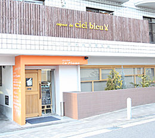
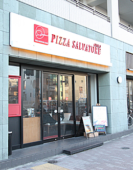
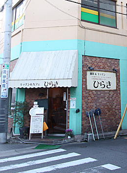
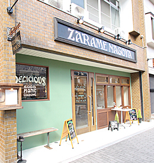
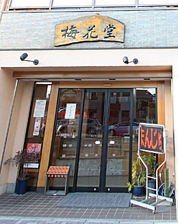
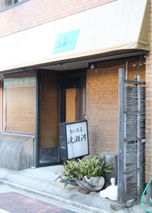
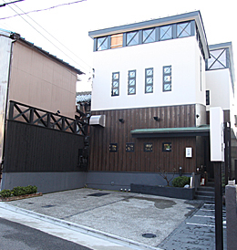
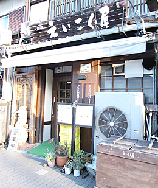
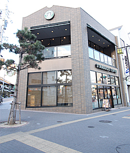

名古屋市千種区を中心に、マンション・土地・新築・中古一戸建など
豊富な不動産物件情報を掲載しています。不動産の査定もお気軽にご相談下さい。


-
明るく開放感がある店内が魅力のイタリアンレストラン。
料理にハズレがなく、何を食べても美味しいと感じるでしょう。
かわいらしい、カジュアルな雰囲気がするので、女性客が多く、デートにもぴったりのおすすめ店です。
BISTRO La Plume（ビストロ ラ・プリュム／イタリアン）
●TEL 052-734-7616
●愛知県名古屋市千種区山門町2-13 カーサタカミ覚王山 1Ｆ
●営業時間／11:30〜15:00(ラストオーダー14:00) 18:00〜23:00(ラストオーダー22:00)
●定休日／火曜・第３水曜
-

-
隠れ家的に使える素敵なレストランです。
ソースの味付けがしったりしているのが特徴で、ボリューム感もあり、全ての料理を美味しく頂けます。
女性客に人気のお店です。
Cuisine Francaise l'adour（ラ・ドゥール／フレンチ）
●TEL 052-752-5037
●愛知県名古屋市千種区山添町1-11-1 エクセル覚王山1Ｆ
●営業時間／11：30〜14：00 18：00〜21：30
●定休日／第1月曜日・日曜日

-
カジュアル感が売りのピッツァ専門店。
ピッツァの世界大会で賞を受賞したというだけあり、味は最高！
人気店だけあり、いつも混雑しています。
PIZZA SALVATORE CUOMO 覚王山（サルバトーレ／ピザ）
●TEL 052-762-9265
●愛知県名古屋市千種区末盛通1-31-7 アンソレイユ覚王山1Ｆ
●営業時間／
[月〜金]11:00〜15:00(ラストオーダー14:30)
17:00〜23:00(ラストオーダー22:30)
[土・日・祝]11:00〜23:00(ラストオーダー22:30)
●定休日／無休
-

-
どてと串カツが有名なお店です。
串カツは1本70円という安さ！
お好みのスースを自分でかけて食べる事が出来、割安感も満点。
味も申し分なく、何度でも行きたくなるお店です。
多古八（串カツ）
●TEL 052-762-7030
●愛知県名古屋市千種区山門町2-53
●営業時間／11：00〜2：00 5：00〜9：00 日曜祝日8：30
●定休日／土曜日

-
ボリューム満点で味もGOOD!
750円のランチは人気メニューで、お値打ち感があり、何度でも食べたくなる美味しさです。
喫茶店らしい気さくな雰囲気も通いやすく、いつも常連客でにぎわっています。
ひらき（喫茶軽食）
●TEL 052-751-6835
●愛知県名古屋市千種区山門町2-22
●営業時間／6:30〜21:30
●定休日／日曜日
-

-
ドーナツの有名店です。
午後に行くと売り切れになっている事が多いほどの人気店。
とてもお洒落な店内と、店員さんの可愛いらしい制服が目を惹きます。
お値段分の期待を裏切らない味はもちろん、居心地の良いお店なので何度も利用したくなります。
ZARAME NAGOYA（洋菓子・ドーナツ）
●TEL 052-763-7662
●愛知県名古屋市千種区山門町2-36
●営業時間／10：00〜20：00
●定休日／火曜日
-

-
パリで修行を積んだオーナーが営む人気のケーキ屋さん。
色鮮やかに色彩豊かなケーキがショーウインドーに並び、白を基調としたお洒落な店内に映えています。
味もさることながら、作るのが大変そう、と思ってしまうほど凝ったデザインのケーキが多く、満足感があります。
メリハリのある味付けは、広い層に人気のようです。
シェシバタ（洋菓子）
●TEL 052-762-0007
●愛知県名古屋市千種区山門町2-54
●営業時間／10:00〜20:00
●定休日／火曜日

-
鬼まんじゅうで有名な梅花堂さんです。
お芋の甘さがウリでしっかりとした味付けが人気です。
昔ながらの味付けは根強い人気で、いつも常連のお客さんで賑わっています。
梅花堂（和菓子）
●TEL 052-751-8025
●愛知県名古屋市千種区末盛通1-6-2
●営業時間／8:00〜17:00
●定休日／不定休
-

-
魚料理が自慢のお店。
新鮮な魚を素材を一番生かす方法で調理してくれて、いつ行っても美味しい魚が食べられます。
落ち着いた雰囲気で、ひとりで行っても楽しめます。
波瀬河（居酒屋）
●TEL 052-752-3325
●愛知県名古屋市千種区末盛通1-20-1
-

-
和食を基調にしながらも、豊かな創造性でアレンジされた料理にはかんしんさせられます。味もさることながら、見た目もすごく美しく、研究されている、という印象を受けます。
店内の作りもモダンで、とても感じがよく接待やデートにもおすすめです。
小久保（割烹）
●TEL052-764-5410
●愛知県名古屋市千種区城山町2-1-2
●営業時間／11:30〜14:00 18:00〜22:00
●定休日／水曜日
-

-
フランテ覚王山の２階にあるカフェで、人気店だけあっていつ行っても繁盛しています。
一人で行ってもデートに使っても雰囲気はバッチリ！
覚王山カフェ Ji. Coo（カフェ）
●TEL 052-751-1234
●愛知県名古屋市千種区丘上町1-39 覚王山フランテ 2F
●営業時間／
モーニング 09:30〜10:30 ランチ11:30〜14:30
アフタヌーンセット 14:30〜17:00 夕食 17:00〜22:00
●定休日／木曜日

-
30種類以上の香辛料で作られる本格派カレーが食べられるお店。
味は劇辛、というわけではなく、素直に美味しいと感じる辛さ。
ナンも癖になるような美味しさで、いつも多くの人で賑わっています。
えいこく屋（インド料理）
●TEL 052-763-2788
●愛知県名古屋市千種区山門町2-58
●営業時間／8:00〜22:00(ラストオーダー21:00)
●定休日／火曜日
-

-
覚王山駅から歩いてスグの便利なスターバックス。
駅の近くだけあって１日中賑わっています。
スターバックスコーヒー覚王山店
●TEL 052-757-3773
●愛知県名古屋市千種区末盛通1-1 末盛ビル
●営業時間／[月〜金] 07:00〜22:00 [土・日・祝] 08:00〜22:00
●定休日／年中無休
-

-
おすすめは550円の花火。
柔らかめの食感、歯ごたえが、食べやすくとてもよい味を出しています。
試食が出来る所が変わっていますが、食べたら最後、美味しさに思わず買ってしまいます（笑
覚王山 吉芋 本店（和菓子）
●TEL 052-763-2010
●愛知県名古屋市千種区日進通5-2-4
●営業時間／10:00〜18:00
●定休日／不定休